Lesson6
Relational Database Design
First Normal Form
域是原子的(atomic)，如果其元素不可再分
非原子域example:
- 一组名字
- 一个人的多个电话号码
如果关系模式的所有属性的域都是原子的，那么其处于第一范式(1NF)。对于关系型数据库，要求所有关系都满足第一范式（1NF）。
在关系型数据库设计中，为了满足第一范式（1NF）的要求，所有属性的值必须是原子的，即每个字段只能包含单一、不可再分的值。
-
对于复合属性，将其拆为一系列不可分割的属性：
- 姓名拆为名与姓
-
对于多值属性，可以：
-
将分为多个不同字段
- 将其单独划分一个表
原子性的是否还取决于how to use the attribute：Suppose that students are given roll numbers which are strings of the form CS0012 or EE1127. 我们利用CS与EE去区分其专业的时候，就已经不是原子性的了。
Pitfalls in Relational Database Design
设计好的数据库的方法：
- 自顶向下
- 自底向上
大模型的解释：
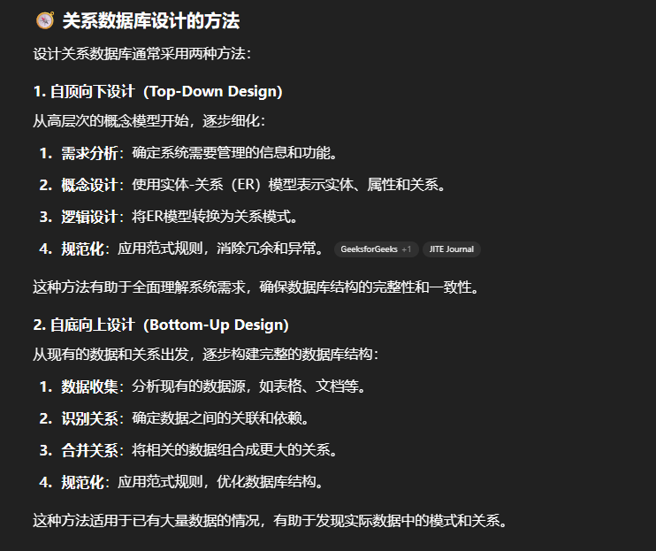
同时也存在泛关系(Universal relation)模型，假设所有数据可以表示为一个大的关系（表），然后通过分解（decomposition）将其拆分为更小的关系，以满足规范化要求。
Deficiencies for the Lending Relation
我懂了。
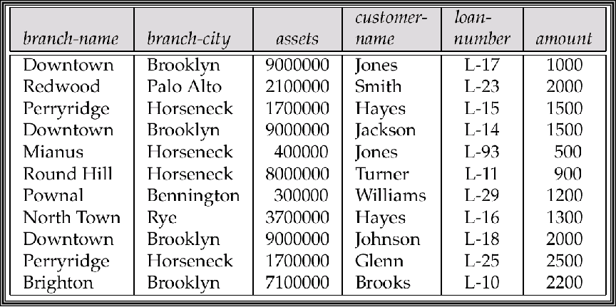
对于这张图而言，每次贷款记录branch_city branch_name assets都会重复出现，造成空间浪费。
我们可以将上述三者单独归为一个表。
同时也将导致一系列异常：
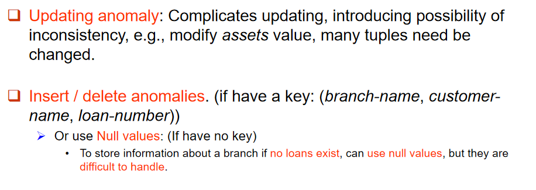
概括一下就是更新、插入、删除可能导致数据被破坏。
Decomposition
之前提到过的泛关系的分解操作：
关键的条件：
- 属性完备性：原先的关系模式的属性应该都在分解后的关系模式中，即：\(R = R_1 \cup R_2 ... \cup R_n\)
-
无损连接性：通过自然分解后的所有关系，能够通过自然连接重建原属性。
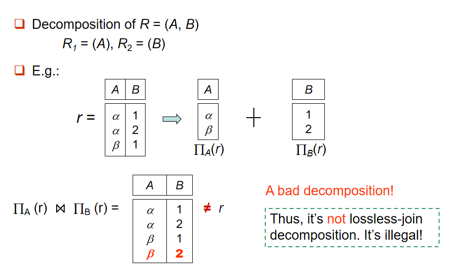
我们的目标就是将关系模式分解出所有好的子关系，同时满足以上两点。
Our theory is based on:
- Functional dependencies (函数依赖)
- Multivalued dependencies (多值依赖)
OK这不就来了
Functional Dependencies
给出了函数依赖的定义：设有关系模式 \(𝑅\)，其中 \(𝛼\)和 \(𝛽\)是 \(R\) 的属性子集。如果在任何合法的关系实例 \(r(R)\) 中，对于所有的元组 \(𝑡_1\)和 \(𝑡_2\)，只要 \(t_1[α]=t_2[α]\)，就必有 \(t_1[β]=t_2[β]\)，则称在 \(𝑅\)上存在函数依赖 \(α→β\) 。
通俗来说，就是\(\alpha\)的值可以完全决定\(\beta\)的值。
- \(K\)是关系模式\(R\)的超码，当且仅当\(K->R\)
-
\(K\)是关系模式\(R\)的候选码，当且仅当：
- \(K->R\)，即为超码
- no \(\alpha ⊂ K\) and \(\alpha -> R\)
We can say the relation r(R) satisfies F, but we cannot, in accord with only a r(R), say: F holds on schema R。
意思是判断一个依赖\(F\)是否holds on \(R\)需要考虑所有可能的\(r(R)\)。
Definition of Trivial and Non-Trivial Dependency
对于不论在什么关系上都成立的函数依赖，我们称其为平凡的（Trivial）: \(\alpha -> \beta\), if \(\beta ⊂ \alpha\) 。
Closure of a Set of Functional Dependencies
函数依赖的闭包是通过已有的函数依赖集合\(F\)能够推导出所有依赖的集合\(F+\)，如：
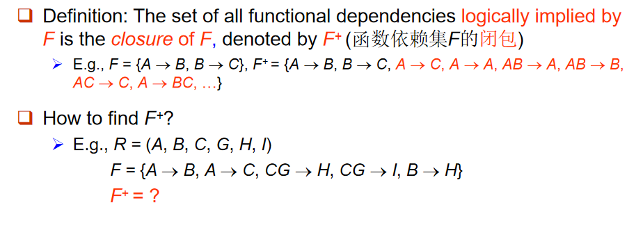
armstrong定律使得我们可以利用以下三个定律来寻找闭包：
- 自反律(reflexivity)：子集有依赖
- 增补律(augmentation):依赖表达式两边添加相同的东西任然是依赖
- 传递律(transitivity)：我相必知道
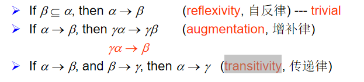
注意有意思的结论， \(α → β\)，那么对于任意的 \(γ\)，有 \(γα → γβ\)，我们就可以进一步推出\(γα → β\)
这些定律是完备且保真的，说明利用这些方法确确实实能生成完整的闭包。
以及补充定理，也都非常好证明与理解：
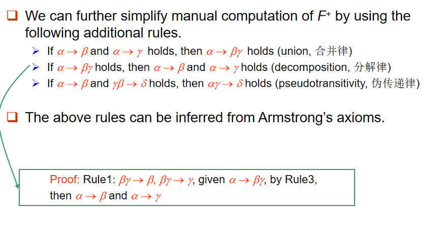
对于\(n\)个属性的关系，闭包的最大大小为\(2^n * 2^n\)。
如何判断某个属性集合是超码？
- 先计算出\(F+\)，然后检查对于在\(F+\)中能用a推出来的属性，是否都组合形成原关系R。
- 直接计算a的闭包。
给定一个属性集 \(a\)，\(a\) 在 \(F\) 下的闭包，记作 \(a+\)，是由 \(a\) 在 \(F\) 下函数确定的所有属性的集合。也就是说，\(a+\) 包含了所有可以通过 \(a\) 直接或间接推导出来的属性。
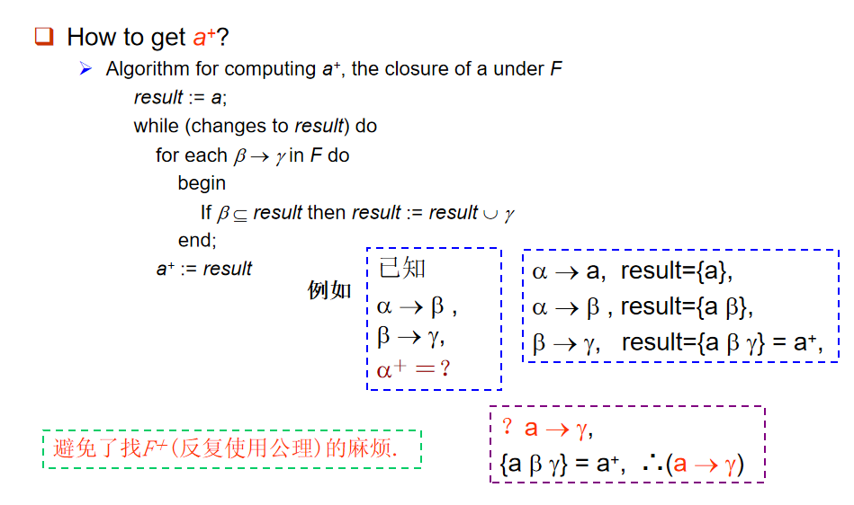
举个例子：
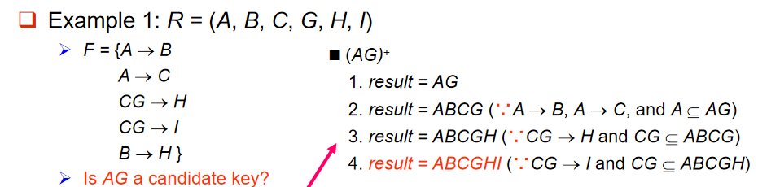
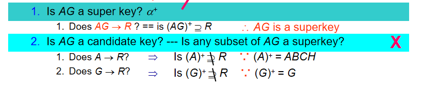
判断是不是候补码还要看是不是最小的，即看其子集能否形成超码。
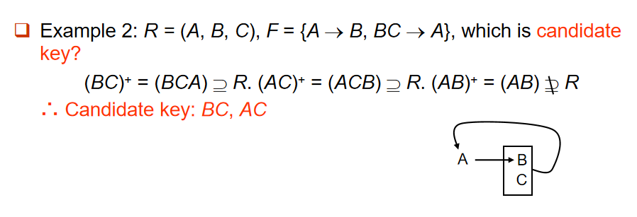
Uses of Attribute Set Closure
- 判断某个属性集是否是超码
- 判断某个数据依赖在闭包
- 完成闭包
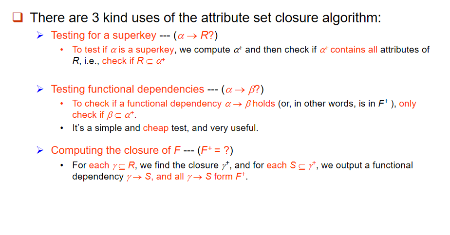
Canonical Cover (正则覆盖)
数据库管理系统（DBMS） 在操作过程中必须始终检查是否违反了任何函数依赖（FD）。
但是，如果函数依赖集 F 太大，检查过程会变得非常昂贵。因此，我们需要简化函数依赖集。
\(F\) 的规范覆盖（记作 \(F_c\)）是一个最小化的函数依赖集，且与 \(F\) 等价。
特点：
- 每个左侧是唯一的：这意味着每个函数依赖的左侧（决定属性的集合）是唯一的，不会重复出现。
- 消除冗余：例如，考虑以下两个函数依赖：\(α₁ → β₁\) 和 \(α₁ → β₂\), 我们可以将它们合并为：\(α₁ → β₁β₂\)。这就减少了冗余，避免了不必要的重复。
很直接的思路：消除掉没有必要的属性，共有三种情况：
-
冗余的函数依赖（FD）
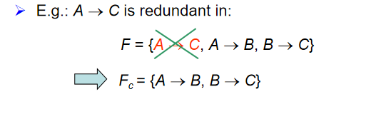 + 左侧的冗余属性
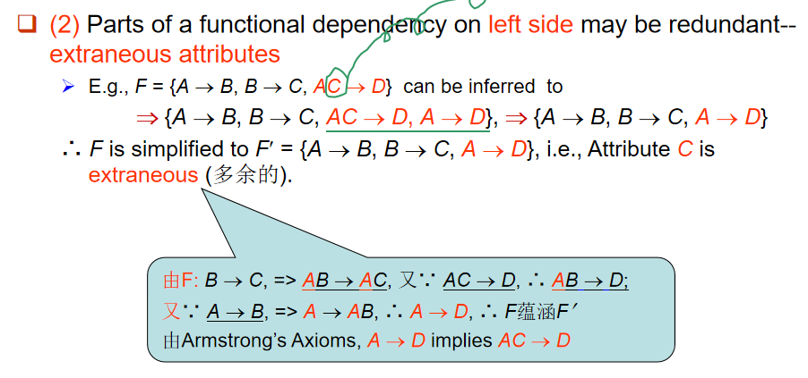
这里面不是说\(C\)没用了，而是说\(AC->D\)可以改为\(A->D\)，这样看起来更简洁（ + 那猜也知道是：右侧的冗余属性
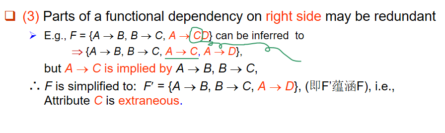
Extraneous Attributes (无关属性)
-
假设有函数依赖 α → β，如果 A ∈ α，且 F 逻辑上蕴含一个新的依赖集 F' = (F - {α → β}) ∪ {(α - A) → β}，那么 A 在 α 中就是冗余的。也就是说，删除 A 后，依赖关系仍然成立。
-
给定函数依赖集 F = {A → C, AB → C}：
- 因为 F = {A → C, AB → C} 逻辑上蕴含 A → C，所以 B 在 AB → C 中是冗余的。
- F' = {A → C}，因此 F' 是简化后的依赖集。
-
-
如果 A ∈ β，且函数依赖集 F' = (F - {α → β}) ∪ {α → (β - A)} 逻辑上蕴含 F，那么 A 在 β 中就是冗余的。
-
给定函数依赖集 F = {A → C, AB → CD}：
- 由于 AB → CD 逻辑上可以推导出 AB → C 和 AB → D，而 AB → C 可以通过 F' = {A → C, AB → D} 推导出来，所以 C 在 AB → CD 中是冗余的。
- 最终 F' = {A → C, AB → D}，因此 C 就是冗余的。
-
-
左侧冗余属性：如果在一个函数依赖 α → β 中，某个属性 A 是冗余的，意味着我们可以去掉 A 并且依赖关系仍然成立。简化后的依赖集应该是 (α - A) → β。
-
右侧冗余属性：如果在一个函数依赖 α → β 中，某个属性 A 在 β 中是冗余的，意味着去掉 A 后，依赖关系仍然成立。简化后的依赖集应该是 α → (β - A)。
ok然后是正反手教学，我们的假设前提是有\(\alpha->\beta\)
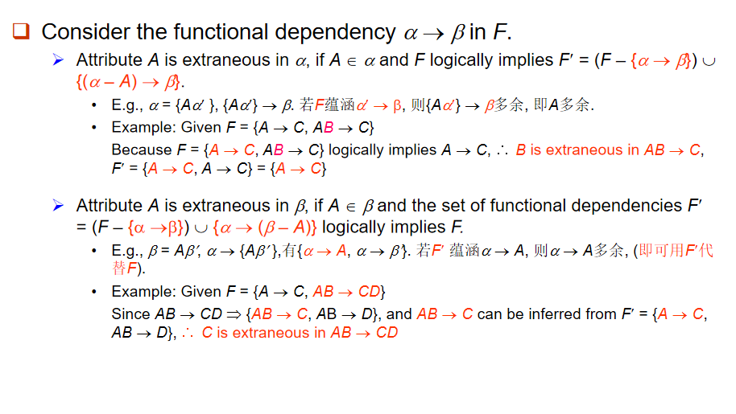
-
测试属性 A ∈ α 是否是冗余的（在左侧）
-
步骤：
-
计算 (α - A)+，即删除 α 中的属性 A 后，计算 (α - A) 的闭包，使用函数依赖集 F。
-
检查 (α - A)+ 是否包含 β。如果 (α - A)+ 包含 β，那么 A 就是冗余的。
-
测试属性 A ∈ β 是否是冗余的（在右侧）
-
步骤：
-
计算 α+，使用修改后的函数依赖集 F'。
- F' = (F - {α → β}) ∪ {α → (β - A)}，即从原始依赖集中去掉 α → β，然后添加 α → (β - A)。
- 检查 α+ 是否包含 A。如果 α+ 包含 A，那么 A 就是冗余的。
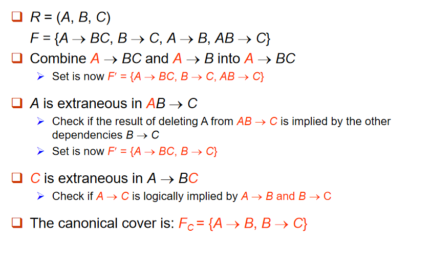
很快的理解好吧。
首先\(A->BC\)与\(A->B\)瞬间重复了，因为前者不仅可以推出后者，还送一个\(A->C\)，删掉\(A->B\)；
然后\(AB->C\)就与\(B->C\)重复了，删掉\(AB->C\)，这里的\(A\)是无关属性；
最后剩下的\(A->B A->C\)利用传递律解一下就是\(A->B B->C\)，因为规范覆盖的唯一性原则。
Decomposition
最早提过，我们希望建立"好"的关系模式，如果其不是，我们就要对其进行分解了。先前也提到过，分解后要保证无损连接性(子关系可以通过自然连接恢复)与属性完备性，还包括依赖保持与子模式范式应为好的(BCNF or 3NF 不是没讲过吧)。
Desirable properties of decomposition
A decomposition of \(R\) into \(R_1\) and \(R_2\) is lossless-join if and only if at least one of the following dependencies are held in \(F+\) :
- \({R1 \cap R2} → R1\)
- \({R1 \cap R2} → R2\)
无损连接分解的条件： 分解后的二个子模式的共同属性必须是R1或R2的码（适用于一分为二的分解）。
然后就是依赖保持，很好理解，对于每个子关系\(R_i\)维护一个依赖\(F_i\)，且最后满足\((F_1 \cup F_2 ... \cup F_n)+ = F+\)
以及提到的：子关系应尽量满足BCNF或3NF。
例子来惹：
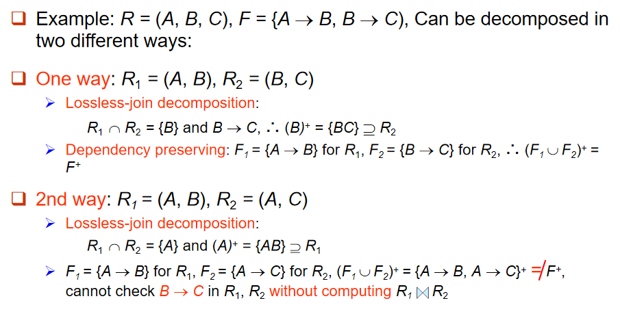
判断行不行，首先检查无损连接，然后看依赖保持，即不经过自然连接能否通过并集的闭包得到\(F+\)。
Boyce-Codd Normal Form
刚刚说不知道，这不就来了吗？
定义：如果一个关系模式\(R\)对于其所有的函数依赖\(\alpha->\beta\)都满足以下两点之一：
- \(\alpha->\beta\)为平凡的，即\(\beta\)为\(\alpha\)的子集
- \(\alpha\)是\(R\)的超码
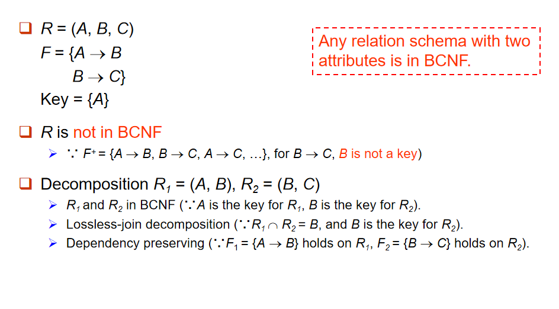
最开始的\(R\)显然不是BCNF因为\(B->C\)不满足。
有一个我开始没懂的点，为什么\(B\)是\(R_2\)的候选键，我这样理解：因为去除\(B\)后，\(R_2\)的\(C\)并不能唯一标识，而由于\(B->C\)，因此...。
验证BCNF的流程也相对简单，我们首先检查平凡的那些，然后对于不平凡的，我们直接去判断\(\alpha\)是不是超码，方法为计算闭包，包含所有属性就是超码，这也能解决上面我自己的困惑。
可在F下判别R是否违反BCNF, 但必须在F+下判别R的分解式是否违反BCNF.

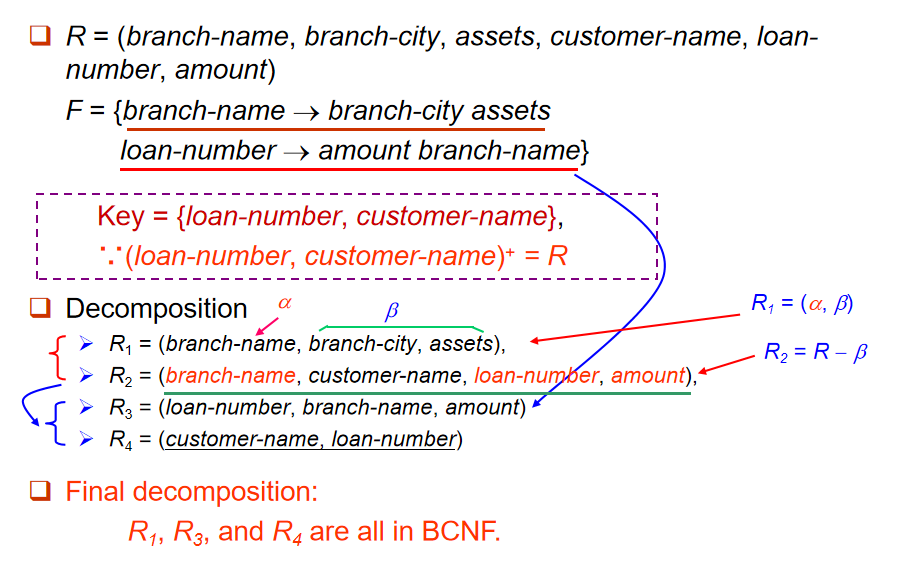
\(R_2\)不满足，因为依赖\(\alpha\)的闭包覆盖不了全部属性。
Third Normal Form
刚刚其实提到一句：不是总能得到一个全BCNF的分解的，因此我们还有3NF。
3NF允许一些冗余，所以可以说它是比BCNF更弱的范式。
定义：如果一个关系模式\(R\)对于其所有的函数依赖\(\alpha->\beta\)都满足以下三点之一：
- \(α → β\) 是平凡的（即 \(β ⊆ α\)）。
- \(α\) 是 \(R\) 的超键。
- \(β - α\) 中的每个属性 \(A\) 都包含在 \(R\) 的一个候选键中（即 \(A ∈ β - α\) 是主属性，如果 \(α ∩ β = ∅\)，则 \(A = β\) 是主属性）。
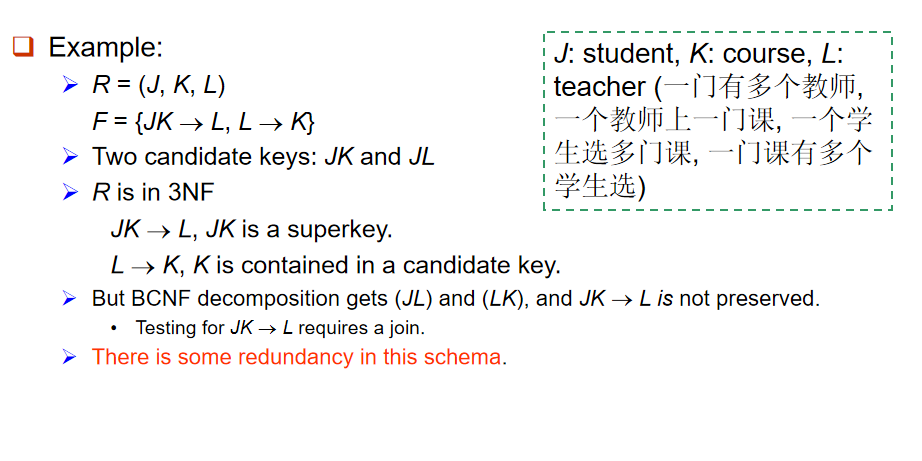
A schema that is in 3NF but not in BCNF has the problems of repetition of information (e.g., the relationship l1, k1), and may need to use null values (e.g., to represent the relationship l2, k2, where there is no corresponding value for J).
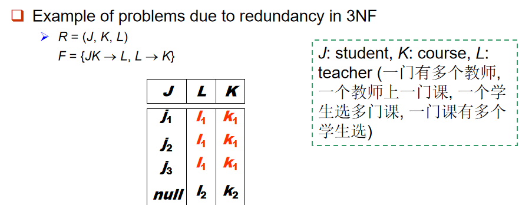
优化：只需要检查 F 中的函数依赖，而不需要检查 F+ 中的所有函数依赖。
使用属性闭包来检查每个依赖 α → β，看 α 是否是超键。
- 如果 α 不是超键，我们必须验证 β 中的每个属性是否包含在关系 R 的一个候选键中。这个测试相对昂贵，因为它涉及到找到所有候选键。
- 证明 3NF 检测是 NP-hard 的。
- （书接上回，但）分解到第三范式（稍后描述）可以在多项式时间内完成。
It is always possible to decompose a relation into relations in 3NF and
- The decomposition is lossless.
- The dependencies are preserved.
It is always possible to decompose a relation into relations in BCNF and
- The decomposition is lossless.
- But it may not be possible to preserve dependencies.
Multivalued Dependencies

teacher与book都是多值属性，对于course都是n:1的比例，即一个课程可能有多个教师，也可能有多个教材。
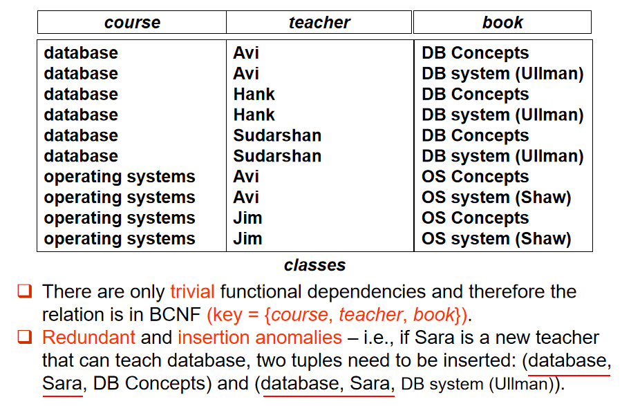
虽然满足了BCNF但产生了数据冗余。
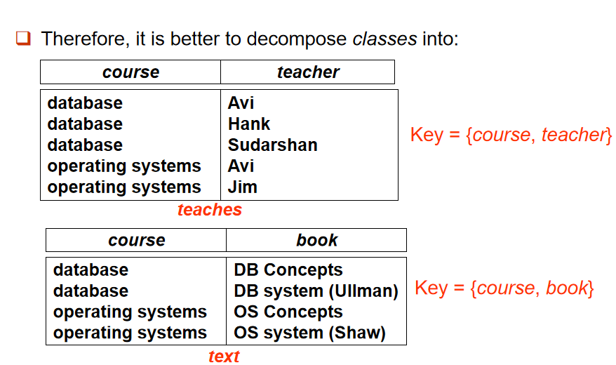
转变为两个表可以相对避免乘法级别的数据冗余，这就是第四范式的功绩。
设 \(R\) 是一个关系模式，\(α ⊆ R\) 和 \(β ⊆ R\)，如果 \(α →→ β\) 在 \(R\) 上成立，则说明对于任意合法关系 \(r(R)\) 中的两个元组 \(t1\) 和 \(t2\)，只要它们在属性集 \(α\) 上的值相同（即 \(t1[α] = t2[α]\)），就必定存在另外两个元组 \(t3\) 和 \(t4\)，使得以下条件成立：
- \(t1[α] = t2[α] = t3[α] = t4[α]\)
- \(t3[β] = t1[β]\)
- \(t4[β] = t2[β]\)
- \(t3[R – α – β] = t2[R – α – β]\)
- \(t4[R – α – β] = t1[R – α – β]\)
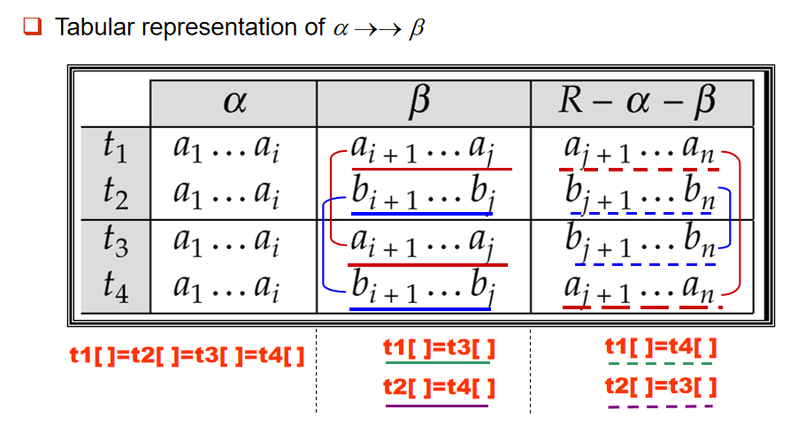
平凡的多值依赖：如果 \(α →→ β\) 是平凡的，即 \(β ⊆ α\)，或\(\beta \cup \alpha = R\)。
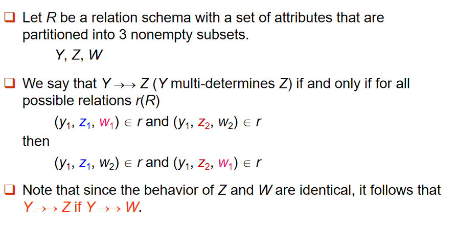
当 Y 的值相同时，Z 和 W 在 Y 下的变化是相互独立的。因此，可以将 Z 和 W 的值视为彼此独立变化的，而 Y 不会干扰它们的关系。
因此 \(Y →→ Z\) 与 \(Y →→ W\) 其实是同时满足的
Theory of MVDs
如果 \(α → β\)，则 \(α →→ β\)，前提是 \(R - α - β = ∅\)（即 \(α ∪ β = R\)）。
大模型结合的证明：
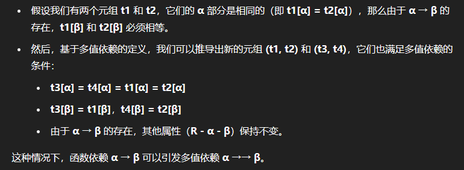
这意味着每个函数依赖都也是一个多值依赖。
闭包（\(D+\)） 是由依赖集 \(D\) 推导出的所有依赖的集合，既包括所有的函数依赖也包括所有的多值依赖。
Fourth Normal Form
一个关系模式 \(R\) 在给定的函数依赖和多值依赖集 \(D\) 下是 4NF ，当且仅当对于 \(D+\) 中所有的多值依赖 \(α →→ β\)（其中 \(α ⊆ R\) 和 \(β ⊆ R\)），以下条件至少满足一个：
- \(α →→ β\) 是平凡的（即 \(β ⊆ α\) 或 \(α ∪ β = R\)）。
- \(α\) 是 \(R\) 的超键。
如果一个关系在 4NF 中，它也必定在 BCNF 中。